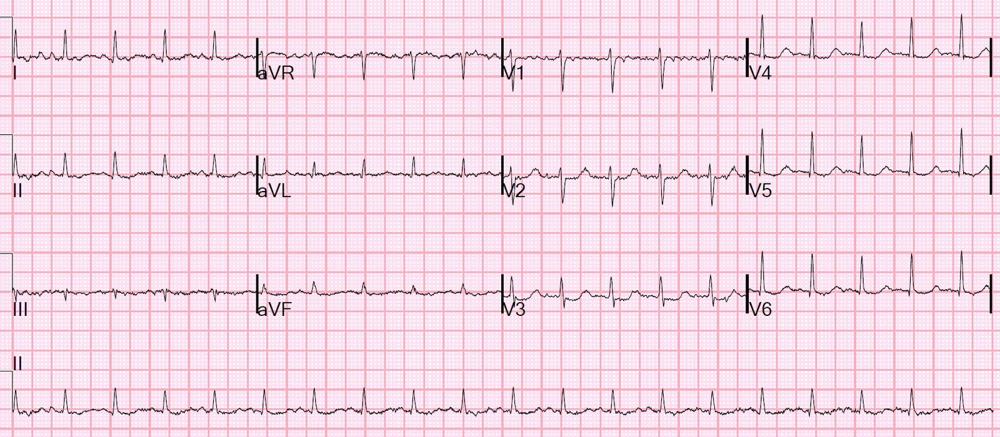
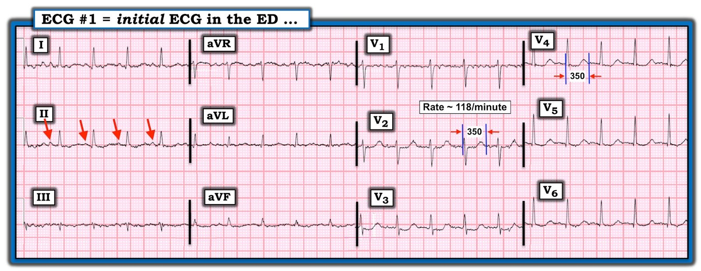
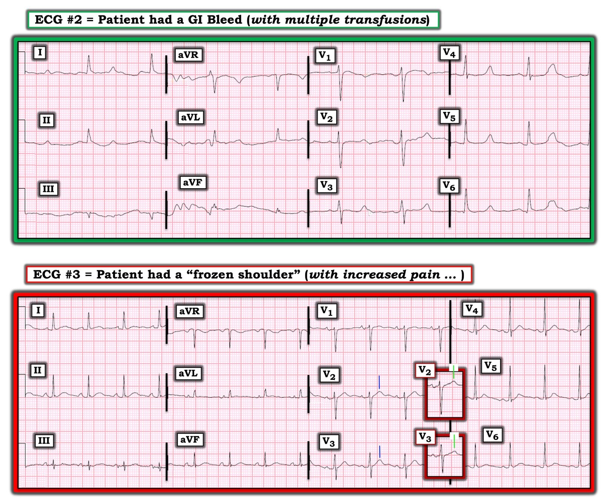

01/07/2020 — Bệnh nhân này có một rối loạn điện giải nặng. Bạn có nhận ra đó là rối loạn gì không? (Không phải hạ kali máu)
Bản dịch tiếng Việt của bài "This patient has a severe electrolyte abnormality. Can you tell what it is? (Not hypokalemia)" – Dr. Smith’s ECG Blog. Giữ nguyên toàn bộ 5 hình ảnh của bản gốc.
Bệnh nhân này có một rối loạn điện giải nặng. Bạn có thể nhận ra từ điện tâm đồ đó là rối loạn gì không?


Nhận định của Smith: Điện tâm đồ cho thấy nhịp nhanh xoang, QT kéo dài phần nào và ST chênh xuống. Không dấu hiệu nào trong số này đặc hiệu cho tình trạng tăng natri máu nặng của bệnh nhân này. Với ST chênh xuống, phải nghĩ tới hạ kali máu cũng như thiếu máu cục bộ, nhưng K bình thường.
Bệnh sử và xét nghiệm:
Bệnh nhân này than phiền bị tiêu chảy và đã cố tự điều trị tiêu chảy bằng dung dịch điện giải tự pha tại nhà. Bệnh nhân đến viện với tình trạng rối loạn ý thức và Na = 175 mmol/L. Các chất điện giải khác bình thường.
Troponin của bệnh nhân tăng nhẹ và ST chênh xuống nhiều khả năng là do thiếu máu cục bộ do tăng nhu cầu.
Tôi không tin rằng bạn có thể chẩn đoán được từ điện tâm đồ.
Không dấu hiệu nào trên điện tâm đồ có thể quy cho tăng natri máu. Theo những gì tôi biết, không có dấu hiệu điện tâm đồ điển hình nào trong bối cảnh tăng natri máu nặng. Người ta có thể đoán rằng Na ngoại bào cao sẽ làm Na đi vào tế bào nhanh hơn trong quá trình khử cực, và do đó QRS hẹp hơn. Mặt khác, nó cũng có thể gây tăng phân cực màng và do đó khử cực chậm hơn. Về tái cực, người ta có thể lập luận theo cả hai hướng. Tôi chưa thấy dữ liệu thực nghiệm nào, cũng chưa nghe lập luận nào từ những chuyên gia hiểu biết nhiều hơn. Dù sao đi nữa, dữ liệu lâm sàng còn rất ít ỏi.
Ở đây QRS là 84 ms. Dù giá trị này ở mức thấp của giới hạn bình thường. Không có điện tâm đồ nào được ghi sau khi Na trở về bình thường, nhưng có một điện tâm đồ cũ và thời gian QRS khi đó là 92 ms. Vậy có lẽ tăng natri máu làm QRS ngắn lại một chút, nhưng hiện tại đó thực sự chỉ là phỏng đoán.
Có một báo cáo ca bệnh đáng tiếc này, kèm tổng quan:
https://www.ncbi.nlm.nih.gov/pmc/articles/PMC5045618/ (báo cáo ca bệnh tăng natri máu cực độ kèm tổng quan y văn)
“Các dấu hiệu điện tâm đồ trong bối cảnh tăng natri máu cực độ rất hiếm và đã lỗi thời. Năm 1955, Levine mô tả một ca vô tình nuốt phải natri dẫn đến sóng T đảo ngược không đặc hiệu [3]. Thay đổi điện tâm đồ ở chó sau khi gây tăng natri máu nhanh cũng đã được nghiên cứu; kết quả cho thấy QT kéo dài và khoảng PR ngắn lại (như đã thấy ở bệnh nhân của chúng tôi), bên cạnh giảm biên độ sóng P và QRS [4]”
Một ca khác ở đây (đáng tiếc là dù họ trình bày cả 4 điện tâm đồ, các bản ghi quá nhỏ, độ phân giải thấp, nên không thể rút ra kết luận.
Extreme hypernatremia (254 mmol/L) and electrocardiogram findings (Tăng natri máu cực độ và các dấu hiệu điện tâm đồ)
Trong ca này, tăng natri máu cực độ vào Ngày 1 đi kèm nhịp nhanh xoang
với tần số 104 nhịp/phút, khoảng PR ngắn 88 ms, ST
chênh xuống lan tỏa và QTc 428 ms. Điện tâm đồ Ngày 3 với natri 202 mmol/L. ST chênh xuống đã hết và khoảng PR tiếp tục ngắn lại, tần số tim 63 nhịp/phút, QTc 489 ms. Điện tâm đồ Ngày 5 với natri 184 mmol/L. Có sóng T đảo ngược tối thiểu ở V2–V6. Điện tâm đồ Ngày 16 với natri 140 mmol/L, nhịp nhanh xoang, ngoài ra không có bất thường nào khác

===================================
BÌNH LUẬN CỦA TÔI, bởi KEN GRAUER, MD (1/7/2020):
===================================
Chủ đề của ca hôm nay liên quan đến một rối loạn điện giải cụ thể. Ngay từ đầu, chúng ta cần thừa nhận rằng ngoài tăng kali máu — một “rối loạn điện giải” hiếm khi là chỉ định chính để ghi điện tâm đồ. Dù vậy — điện tâm đồ có thể hỗ trợ vô giá trong việc đánh giá một số bệnh nhân mắc những loại nhất định của rối loạn điện giải, đặc biệt là để giải thích một số bất thường sóng ST-T có thể gặp.
Điểm MẤU CHỐT: Một khái niệm quan trọng cần nắm là một số rối loạn điện giải có thể (và cần) được nhận ra ngay lập tức (tức là, trước khi có kết quả xét nghiệm máu xác nhận).
- Ví dụ — rất nhiều ca tăng kali máu đe dọa tính mạng đã được đăng trên Dr. Smith’s ECG Blog, trong đó calci gluconat tĩnh mạch được chỉ định ngay lập tức dựa trên điện tâm đồ, dù nồng độ K+ huyết thanh chính xác chưa được biết (Xem bài đăng ngày 8 tháng Chín năm 2019 trên Dr. Smith’s ECG Blog, cùng nhiều bài khác).
- Một manh mối lâm sàng quan trọng về khả năng có rối loạn điện giải — là Bệnh sử. Biết rằng bệnh nhân bị suy thận nặng; mất nước rõ rệt; dễ vào viện vì DKA; hoặc đã nôn suốt cả ngày trước khi đến khoa cấp cứu (ED) — đều là những manh mối vô giá cho thấy có thể đang có một hoặc nhiều rối loạn điện giải huyết thanh.
Dù vậy — nhiều rối loạn điện giải không thể nhận ra ngay từ điện tâm đồ. Đó chính là tình huống trong ca hôm nay. Để rõ ràng — tôi đã đưa lại điện tâm đồ lúc vào viện của ca hôm nay trong Hình 1.
- Những dấu hiệu điện tâm đồ NÀO trong bản ghi này phù hợp với một rối loạn điện giải?
- Bạn có thể cho biết bản ghi này gợi ý rối loạn điện giải NÀO không?


SUY NGHĨ CỦA TÔI về điện tâm đồ #1: Mặc dù bệnh sử trong ca hôm nay rõ ràng phải khiến bạn nghi ngờ rối loạn điện giải (tức là, Bệnh nhân đến viện với rối loạn ý thức, sau khi cố tự điều trị tiêu chảy tại nhà bằng dung dịch điện giải tự pha) — tôi không nghĩ điện tâm đồ ban đầu của bệnh nhân có giá trị chẩn đoán.
- Có nhiều nhiễu đường nền. Điều này khiến hình dạng sóng P thay đổi rất nhiều — tuy vậy, dựa theo các mũi tên ĐỎ ở chuyển đạo II — tôi nghĩ nhịp ở điện tâm đồ #1 có thể nhận ra là nhịp nhanh xoang đều với tần số ~118/phút. Khoảng PR trông bình thường với tần số nhanh như vậy (tức là, khoảng PR thường ngắn lại một chút khi nhịp nhanh). Phức bộ QRS hẹp.
Việc đánh giá khoảng QTc ở điện tâm đồ #1 đáng để bàn luận. Theo kinh nghiệm của tôi — giá trị lâm sàng của việc đánh giá QTc ở tần số tim nhanh là hạn chế.
- Trang web MD Calculator cung cấp phép tính tự động QTc (hiệu chỉnh theo tần số) theo lựa chọn của bạn trong 4 phương pháp tính được trích dẫn phổ biến nhất. Để dùng công cụ này, chỉ cần nhập tần số tim và khoảng QT bạn đo được (tính theo số ô nhỏ nằm trong khoảng QT dài nhất mà bạn đo).
- Dùng công cụ trên trang này — tôi nhập tần số tim ở điện tâm đồ #1 ( = 118/phút) — và khoảng QT dài nhất tôi đo được ( = 350 msec, tương ứng với 350 ÷ 40 msec/ô nhỏ = 8,75 ô nhỏ). Đưa 2 con số này vào các công thức khác nhau trên trang MD Calculator cho ra giá trị ước tính QTc = 491 msec (theo công thức Bazett) — 439 msec (theo Fridericia) — 426 msec (theo Framingham) — và 452 msec (theo Hodges).
- Trong khi giá trị QTc tính theo Bazett ở điện tâm đồ #1 sẽ là kéo dài (tức là, 491 msec) — và QTc tính theo Hodges ở mức ranh giới (tức là, 452 msec) — 2 công thức còn lại cho giá trị QTc nằm trong giới hạn bình thường.
- LƯU Ý: Sự chênh lệch giữa các giá trị QTc ước tính này làm nổi bật sự khác biệt giữa các phương pháp, nhất là ở tần số tim nhanh hơn. Đặc biệt — phương pháp Bazett nổi tiếng là ước tính quá cao QTc ở tần số tim nhanh (Để biết thêm về chủ đề này — XEM phần bàn luận chi tiết của Dr. Smith trong bài đăng ngày 24 tháng Mười Một năm 2017).
- ĐIỀU CỐT LÕI về QTc ở điện tâm đồ #1: Tôi hoàn toàn thừa nhận mình không chắc chắn khi đánh giá QTc ở điện tâm đồ #1. Về chủ quan, QTc “trông” ít nhất hơi kéo dài (tức là, rõ ràng đo được hơn một nửa khoảng R-R) — nhưng với mức độ nhịp nhanh như vậy, tôi cảm thấy QTc ở điện tâm đồ #1 có giá trị lâm sàng hạn chế.
Quay lại đánh giá có hệ thống điện tâm đồ #1:
- Trục mặt phẳng trán bình thường (khoảng +20 độ).
- Không có lớn các buồng tim.
- Về Thay đổi Q-R-S-T: Có sóng q nhỏ, hẹp ở các chuyển đạo bên (tôi không tin có sóng Q ở chuyển đạo III, mà thay vào đó là phức bộ rSr’ ở chuyển đạo này) — tăng tiến sóng R bình thường (vùng chuyển tiếp nằm giữa V2 và V3) — và, có các bất thường sóng ST-T không đặc hiệu lan tỏa (sóng ST-T dẹt phần nào, với ST chênh xuống 1 mm ở chuyển đạo V3).
NHẬN ĐỊNH Lâm sàng CỦA TÔI về điện tâm đồ #1:
- Các dấu hiệu chính trên điện tâm đồ #1 là nhịp nhanh xoang kèm bất thường sóng ST-T không đặc hiệu. QTc trông có vẻ kéo dài, dù điều này kém chắc chắn hơn do tần số nhanh.
- NẾU bệnh nhân này có đau ngực đáng lo ngại — thì các thay đổi sóng ST-T có thể phù hợp với thiếu máu cục bộ, và có thể là cấp tính. Cần đối chiếu lâm sàng (và các bản ghi liên tiếp, cũng như so sánh với các bản ghi cũ) để làm rõ điều này.
- Tuy nhiên, xét bệnh sử được cung cấp (tức là Bệnh nhân này đến viện với rối loạn ý thức, sau khi tự điều trị tiêu chảy tại nhà bằng dung dịch điện giải tự pha) — tôi đã nghi ngờ bệnh nhân có thể bị hạ kali máu và/hoặc hạ magnesi máu.
- Dù đã nói như trên — tôi không bao giờ đoán được từ điện tâm đồ #1 rằng natri huyết thanh của bệnh nhân này đã tăng đến mức nguy hiểm là 175 mmol/L.
Natri huyết thanh và điện tâm đồ:
- Tăng natri máu nặng không phải là rối loạn thường gặp. Vì vậy — y văn về các dấu hiệu điện tâm đồ trong tăng natri máu nặng rất ít ỏi. Dr. Smith trích dẫn tài liệu của Arambewela và cs. (J Med Case Rep, 2016) — trong đó một báo cáo ca bệnh về chủ đề này cho thấy các thay đổi điện tâm đồ gồm nhịp nhanh xoang; khoảng PR ngắn lại (dù khoảng PR kéo dài thường khó đánh giá ở tần số tim nhanh hơn); khoảng QT kéo dài; và nguy cơ khởi phát rối loạn nhịp ác tính.
- LƯU Ý: Cả hạ lẫn tăng natri máu đều có thể đi kèm các rối loạn điện giải khác, cũng như các tình trạng khác làm tăng bệnh suất và tử suất. Kinh nghiệm lâm sàng của tôi (và những gì tôi thu thập được từ y văn ít ỏi hiện có) — để lại cho tôi ấn tượng rõ rệt rằng dù một điện tâm đồ như trong Hình 1 có thể phù hợp với tăng natri máu nặng — việc chẩn đoán một rối loạn natri huyết thanh cụ thể là khó có được từ việc đánh giá điện tâm đồ, nhất là khi không có bệnh sử gợi ý.
CÂU HỎI:
Nhằm mài giũa kỹ năng đọc điện tâm đồ — Hãy xem 2 điện tâm đồ sau đây trong Hình 2 (Cả hai bản ghi này đều được lấy từ bài ngày 19 tháng Hai năm 2015 trên Dr. Smith’s ECG Blog).
- (Những) rối loạn điện giải NÀO được gợi ý bởi các dấu hiệu trên điện tâm đồ #2, và trên điện tâm đồ #3?


TRẢ LỜI:
Nhịp trên cả hai bản ghi trong Hình 2 đều là nhịp xoang, dù có nhịp chậm (cũng như có nhiều nhiễu) ở điện tâm đồ #2. Dù vậy — các dấu hiệu bất thường chính liên quan đến việc đánh giá các thay đổi sóng ST-T:
- Điện tâm đồ #2 — QTc kéo dài rõ. Ở cuối một đoạn ST tương đối bình thường (dẹt) — là một sóng T có vẻ không bị ảnh hưởng. Cần lưu ý — sóng T ở một số chuyển đạo trên điện tâm đồ #2 nhọn hơn mức thường thấy (tức là ở các chuyển đạo I, II, V3 đến V6). Cần nhấn mạnh rằng dù sóng T ở một số chuyển đạo này không quá cao — nó thực sự nhọn hơn dự kiến. Đây là “dấu hiệu lều” ở cuối sa mạc (tức là sau một đoạn ST bình thường nhưng kéo dài là một sóng T “đơn độc”). Hạ calci máu thường đi kèm tăng kali máu — vì vậy sóng T xuất hiện ở cuối một đoạn ST dài thường nhọn ở bệnh nhân suy thận có cả hai bất thường.
Điện tâm đồ #3 — Bệnh sử trong ca này rất có giá trị gợi mở. Những năm làm chăm sóc ban đầu đã dạy tôi cảnh giác với những bệnh nhân lớn tuổi đến khám với bệnh sử bất thường về đau không điển hình ở một vùng cụ thể nào đó trên cơ thể. Dù rõ ràng bệnh nhân bị “đông cứng khớp vai” (frozen shoulder) có thể có những đợt đau vai nặng lên — tôi lập tức nghi ngờ, sau khi nghe bệnh sử này và xem điện tâm đồ #3, rằng bệnh nhân bị tăng calci máu thứ phát do bệnh ác tính. Dấu hiệu điện tâm đồ nổi bật trên bản ghi này là khoảng QTc ngắn.
- ĐIỂM THEN CHỐT (PEARL) #1 (về tăng calci máu): Dù mô tả trong sách giáo khoa về dấu hiệu điện tâm đồ của tăng calci máu chỉ đơn giản là “khoảng QT ngắn lại” — QT ngắn lại không phải là một dấu hiệu điện tâm đồ dễ nhận ra (ngay cả khi bạn đang tìm nó). Ngoài ra, điều không được mô tả trong sách giáo khoa — là Ca++ huyết thanh phải tăng cao đến mức nào thì khoảng QT mới ngắn lại như vậy. Trong 3 thập kỷ làm bác sĩ điều trị chính chuyên ngành y học gia đình (làm việc cả trong lẫn ngoài bệnh viện) — tôi đã luôn chăm chú xem xét kỹ điện tâm đồ của tất cả những bệnh nhân tôi gặp có nồng độ calci huyết thanh tăng. Theo kinh nghiệm của tôi — KHÔNG có thay đổi nào về hình dạng điện tâm đồ ở đại đa số bệnh nhân tăng calci máu cho đến khi Ca++ huyết thanh của họ tăng đáng kể (tức là nhìn chung trên 12 mg/dL). Bệnh nhân có bản ghi trong điện tâm đồ #3 có Ca++ huyết thanh = 15 mg/dL. Ông được phát hiện bị ung thư phổi di căn vai, giải thích cho tình trạng đau chi tăng lên.
- ĐIỂM THEN CHỐT (PEARL) #2 (về tăng calci máu): Không chỉ đơn thuần là QT “ngắn lại” — dấu hiệu điện tâm đồ chủ yếu của tăng calci máu đáng kể là khoảng từ Q đến đỉnh T ngắn. Ý tôi là thời gian để sóng T đạt tới đỉnh bị rút ngắn khi tăng calci máu đáng kể. Tôi không biết phép đo nào để định lượng thời gian-đến-đỉnh-sóng-T bị rút ngắn này. Thay vào đó — đây là một nhận định chủ quan — mà với kinh nghiệm (được trang bị thêm bằng mức độ nghi ngờ cao hơn đối với ca đang xét) BẠN có thể nhận ra. Trong Hình 2 — các đường thẳng đứng màu XANH LAM ở chuyển đạo V2 và V3 của điện tâm đồ #3 được đặt ngay trên đỉnh sóng T ở các chuyển đạo này. Chẳng phải thời gian cho tới khi đạt đỉnh sóng T này “trông” ngắn sao? Bây giờ hãy nhìn vào các ô chèn ở chuyển đạo V2 và V3 của điện tâm đồ #3. Tôi đã đặt vào mỗi ô chèn một phức bộ QRST từ điện tâm đồ ghi lại sau khi điều chỉnh nồng độ Ca++ huyết thanh tăng cao. Chẳng phải thời gian cho tới khi sóng T đạt đỉnh (được đánh dấu bằng các đường thẳng đứng màu XANH LỤC trong các ô chèn) giờ đây trông dài hơn (và bình thường hơn) sau khi điều chỉnh nồng độ Ca++ huyết thanh sao?
LƯU Ý KẾT THÚC: Chúng tôi đã giới thiệu rất nhiều ca tăng và hạ kali máu trong các bài blog trước đây. Chỉ cần nhập hyperkalemia (tăng kali máu) hoặc hypokalemia (hạ kali máu) vào Thanh Tìm kiếm trên Dr. Smith’s ECG Blog nếu bạn muốn tìm các ví dụ điện tâm đồ của những rối loạn điện giải này.
- Tôi xin kết thúc bài hôm nay bằng việc dẫn chiếu tới bài ngày 26 tháng Một năm 2020 (có Bảng trình bày tuần tự trong phần Bình luận của tôi về các dấu hiệu điện tâm đồ của tăng kali máu) — và tới bài ngày 9 tháng Năm năm 2020 (có Bảng trình bày tuần tự trong phần Bình luận của tôi về các dấu hiệu điện tâm đồ của hạ kali máu).